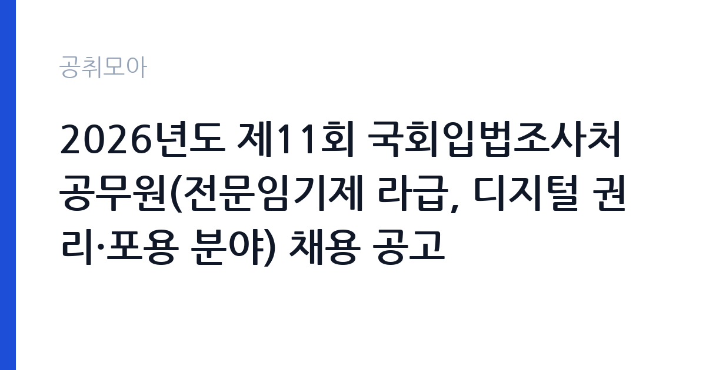

[국가기관] 2026년도 제11회 국회입법조사처 공무원(전문임기제 라급, 디지털 권리·포용 분야) 채용 공고
국회 국회입법조사처 · 서울 · 마감 2026-10-30 (D-13) · 출처 나라일터

한눈에 보는 모집 조건
| 기관 | 국회 국회입법조사처 |
|---|---|
| 공고명 | 2026년도 제11회 국회입법조사처 공무원(전문임기제 라급, 디지털 권리·포용 분야) 채용 공고 |
| 고용형태 | 임기제 |
| 근무지 | 서울 |
| 게시일 | 2026-10-16 |
| 마감일 | 2026-10-30 (D-13) |
지원자격, 이렇게 읽으세요
- 전문임기제 라급 1명
- 접수 ~2026-10-30 마감
- 세부 조건은 원문 공고문 확인
공고문은 자격요건을 학위와 근무경력으로 제시합니다. 디지털 권리·포용 분야의 전문성을 학위 논문이나 실무 경력으로 증명해야 하고, 관련 법률·정책 연구 경험이 사실상의 기준선이 됩니다. 국회 공무원인 만큼 국가공무원법상 결격사유가 없어야 하며, 병역과 신원 관련 확인 절차도 거칩니다. 전문임기제는 직급별로 요구 학위와 경력 기간이 다르게 설정되므로, 라급에 해당하는 정확한 요건은 원문 공고문의 자격요건표에서 확인해야 합니다.
이 공고의 포인트
입법조사처는 국회의원의 입법 활동을 지원하는 국회 소속 조사 기관입니다. 이 자리는 디지털 권리와 포용이라는 비교적 새로운 정책 영역을 맡습니다. 플랫폼 종사자 권리, 디지털 격차, 개인정보와 인공지능 활용의 기본권 문제가 모두 이 범주에 들어갑니다. 연구자가 국회 안에서 정책 결정 과정에 직접 관여할 수 있는 자리라는 점이 가장 큰 특징입니다. 임기제이므로 계약 기간과 연장 조건을 확인해야 합니다.
전형은 어떻게 진행되나
지원은 국회 채용 사이트에서 온라인으로 하고, 추가 서류를 제출하는 방식으로 진행됩니다. 서류전형에서 학위와 경력, 연구 실적을 평가하고 면접전형에서 전문성과 정책 판단 능력을 확인하는 구조입니다. 조사처 채용은 연구 실적을 상당히 비중 있게 봅니다. 최종합격자 발표와 임용 일정은 조사처 누리집 공고로 안내되며, 문의는 총무담당관실로 하면 됩니다.
원문에서 확인한 전형 방식
[국회입법조사처 공고 제 2026 – 93 호] 2026년도 제11회 국회입법조사처 공무원 채용 공고 국회입법조사처는 입법 및 정책과 관련된 사항을 조사·분석하여 국회의원에게 제공함으로써 국회의원의 의정활동을 지원하기 위해 설립된 국회소속의 입법정책지원기관입니다. 국회입법조사처와 미래를 함께하며 국가와 사회발전에 기여하고자 하는 유능한 인재를 다음과 같이 채용하고자 하오니 많은 응모바랍니다. 2026년 10월 16일 국회입법조사처장 ○ 모집분야 : 디지털 권리·포용 ○ 선발직급 : 전문임기제 라급 ○ 고용형태 : 임기제 ○ 자격요건 : 학위, 근무경력 ○ 접수기간 : 2026년10월16일 ~ 2026년10월30일 ○ 응시방법 : 온라인 지원페이지를 통한 접수(https://gosi.assembly.go.kr/) 및 서류 제출 ○ 문의처 : 02-6788-4517 (총무담당관실)
이런 분께 추천해요
- 디지털 권리·플랫폼 정책·개인정보 분야를 연구해온 석·박사 학위 소지자
- 정부 부처나 연구기관에서 정책 보고서를 작성한 경력자
- 입법 과정에 직접 참여해 정책을 문서로 남기고 싶은 연구자
지원 전 체크리스트
- 라급에 해당하는 학위·경력 요건을 원문 자격요건표에서 정확히 확인
- 연구 실적 목록과 대표 논문 사본을 미리 준비
- 국회 채용 사이트 회원가입과 서류 업로드 형식 사전 점검
- 임기제 계약 기간과 연장 조건 확인
모집 일정과 제출 타이밍
접수는 2026년 10월 16일부터 10월 30일까지입니다. 온라인 접수와 별도로 서류 원본이나 사본 제출이 요구되므로 마감 전에 발송을 마쳐야 합니다. 서류전형 결과 발표와 면접 일정은 접수 마감 후 조사처 공고로 안내됩니다. 임용 예정일은 최종합격자 발표 후 협의로 정해지는 경우가 많습니다.
직무 이해하기: 국가기관
입법조사관의 기본 산출물은 조사보고서입니다. 의원실이나 상임위원회에서 요청한 정책 의제를 검토해 쟁점, 입법 대안, 외국 사례를 정리하고, 필요하면 법안 검토 의견을 붙입니다. 디지털 권리·포용 분야는 기술 변화가 빠르고 이해관계가 첨예해 국내외 규제 동향을 계속 추적해야 합니다. 국회 세미나와 간담회 지원, 위원회 질의 자료 준비도 업무에 포함됩니다. 정확성과 기한 준수가 평가의 핵심입니다.
자기소개서 작성 팁
자기소개서와 연구실적 요약은 정책 기여 가능성에 초점을 맞추는 것이 좋습니다. 디지털 권리 분야에서 어떤 문제를 다뤘고, 그 결과가 어떤 제도 개선으로 이어질 수 있는지 연결해 쓰십시오. 국회입법조사처가 내는 보고서 형식을 한두 편 읽어보고 문체와 구성을 맞추면 준비도가 드러납니다. 확인되지 않은 통계나 수치를 인용하는 것은 피해야 합니다.
면접 준비 포인트
면접은 연구 경력의 깊이와 정책 판단을 함께 봅니다. 특정 디지털 권리 쟁점에 대해 찬반 논거를 정리해보라는 요청이 나올 수 있고, 이해관계자 간 조율 방식을 묻기도 합니다. 보고서를 어떤 구조로 쓸지 설명해보라는 질문도 자주 나옵니다. 답변은 결론을 먼저 제시하고 근거를 붙이는 방식으로 구성하면 전달력이 높아집니다.
급여·근무조건 읽는 법
전문임기제 라급의 보수는 국회 공무원 보수 규정과 임기제 운영 기준에 따라 책정되며, 공고문에 보수 수준이 제시됩니다. 구체적인 금액은 원문에서 확인하십시오. 임기제공무원은 계약 기간이 정해져 있고 정년이나 호봉 승진이 적용되지 않습니다. 각종 수당과 복지 항목은 국회 규정을 따르며, 세금과 4대보험을 공제한 금액이 실수령액입니다. 계약 기간과 연장 가능 여부는 임용 계약서에서 확정됩니다.
자주 묻는 질문
- 전문임기제는 정규 공무원인가요?
임기제공무원으로 계약 기간을 정해 임용되는 신분입니다. 정년이 보장되는 일반 공무원과는 다릅니다. - 라급은 어느 정도 직급인가요?
전문임기제는 가급부터 학위와 경력 수준에 따라 직급이 나뉘며, 라급에 해당하는 요건과 보수는 공고문의 자격요건표와 보수표에서 확인해야 합니다. - 근무지는 어디인가요?
서울 영등포구 의사당대로 1 국회도서관 403호이며, 주 5일 오전 9시부터 오후 6시까지 근무합니다.
함께 보면 좋은 공고
[국가기관] [국립군산대학교]국립대학육성사업 기간제 계약직원(연구원) 채용 재공고 — 마감 2026-10-26[국가기관] 임상연구과 제5차 전문연구원(다급 1명) 채용공고 — 마감 2026-10-25[국가기관] 2026년도 제1회 화성동탄우체국 공무직 우정실무원 채용시험 서류전형 결과 및 실기/면접시험 공고 — 마감 2026-10-20출처: 나라일터 공개정보를 바탕으로 공취모아가 정리한 안내글입니다. 모집 조건·일정은 변경될 수 있으니 지원 전 반드시 원문 공고문을 확인하세요. 본 글은 정보 제공용이며 합격을 보장하지 않습니다.